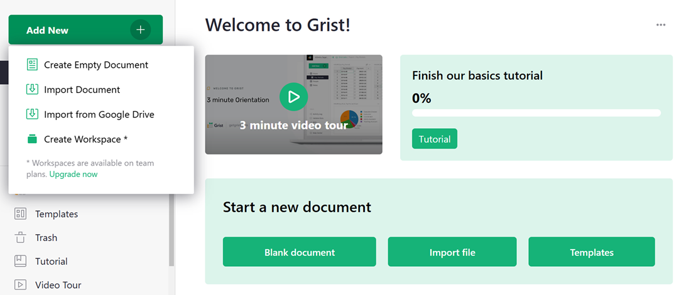

Warning
La traduction proposée ici a été générée automatiquement par le modèle d’intelligence artificielle GPT-4o. Il est probable qu’elle contienne des imperfections.
Mais la bonne nouvelle est que vous pouvez rejoindre la communauté de traduction pour améliorer le contenu fourni ici 👋.
Comment créer un CRM personnalisé#
Grist est aussi facile à utiliser qu’un tableur, mais vous donne de nouveaux pouvoirs lorsque les données ne s’intègrent pas dans une simple grille.
Un bon exemple est le suivi des contacts et de nos conversations avec eux. Pour une entreprise, cela pourrait être des clients, des prospects ou des candidats à un emploi. Pour un particulier, cela pourrait être des entreprises auxquelles il a postulé dans le cadre d’une recherche d’emploi.
Dans ce tutoriel, nous allons expliquer l’exemple de “CRM léger”, que vous pouvez utiliser comme modèle pour vos propres contacts, puis montrer comment le construire à partir de zéro. Vous apprendrez à :
- Ajouter des tables
- Lier des données
- Définir des types de colonnes
- Créer des mises en page personnalisées
Explorer l’exemple#
Ouvrez le document CRM léger, trouvé dans Exemples & Modèles sur votre page d’accueil Grist.
-
Vous verrez la page “Contacts”, listant les contacts sur la gauche de l’écran.
-
Cliquez sur n’importe quel contact pour le sélectionner. Les deux sections à droite montrent les détails et l’historique des interactions avec le contact sélectionné.
Comment cela se compare-t-il à un tableur ? Ces captures d’écran montrent l’exemple de CRM léger à gauche, et un tableur ordinaire avec les mêmes données à droite.


<div class="item">
<img src="../images/lightweight-crm/grist-crm3.png" alt="Capture d'écran Grist3">
</div>
<!-- Contrôles -->
<a class="left carousel-control" href="#carousel-grist" role="button" data-slide="prev">
<span class="glyphicon glyphicon-chevron-left" aria-hidden="true"></span>
<span class="sr-only">Précédent</span>
</a>
<a class="right carousel-control" href="#carousel-grist" role="button" data-slide="next">
<span class="glyphicon glyphicon-chevron-right" aria-hidden="true"></span>
<span class="sr-only">Suivant</span>
</a>
</div>
</div>
<div class="col-md-6">
<div id="carousel-spreadsheet" class="carousel slide" data-interval="false">
<!-- Indicateurs -->
<ol class="carousel-indicators">
<li data-target="#carousel-spreadsheet" data-slide-to="0" class="active"></li>
<li data-target="#carousel-spreadsheet" data-slide-to="1"></li>
<li data-target="#carousel-spreadsheet" data-slide-to="2"></li>
</ol>
<!-- Wrapper pour les diapositives -->
<div class="carousel-inner" role="listbox">
<div class="item active">
<img src="../images/lightweight-crm/spreadsheet1.png" alt="Capture d'écran Tableur1">
</div>
<div class="item">
<img src="../images/lightweight-crm/spreadsheet2.png" alt="Capture d'écran Tableur2">
</div>
<div class="item">
<img src="../images/lightweight-crm/spreadsheet3.png" alt="Capture d'écran Tableur3">
</div>
</div>
<!-- Contrôles -->
<a class="left carousel-control" href="#carousel-spreadsheet" role="button" data-slide="prev">
<span class="glyphicon glyphicon-chevron-left" aria-hidden="true"></span>
<span class="sr-only">Précédent</span>
</a>
<a class="right carousel-control" href="#carousel-spreadsheet" role="button" data-slide="next">
<span class="glyphicon glyphicon-chevron-right" aria-hidden="true"></span>
<span class="sr-only">Suivant</span>
</a>
</div>
</div>
La difficulté réside dans l’historique des notes pour un contact. Dans une grille bidimensionnelle, vous avez peu d’options pour inclure plusieurs notes. Si vous les incluez sous forme de plusieurs colonnes, cela rend rapidement le tableur difficile à gérer et à naviguer.
Grist ressemble davantage à une application, mais reste aussi polyvalent qu’un tableur.
L’exemple de “CRM léger” peut être utilisé immédiatement tel quel (avec les données d’exemple), ou comme modèle (juste la structure sans les données). Voici quelques points supplémentaires sur son utilisation en tant que CRM :
-
Pour ajouter un nouveau contact, cliquez sur la ligne vide en bas de la liste des contacts, puis remplissez la section vide “Fiche CONTACTS” qui apparaît à droite.
-
Pour ajouter une nouvelle conversation, sélectionnez un contact, puis cliquez sur la ligne vide à la fin de la table Interactions. Vous pouvez entrer la date d’aujourd’hui en utilisant le raccourci
⌘ + ; (point-virgule)(Mac) ouCtrl + ; (point-virgule)(Windows). Ensuite, sélectionnez le type d’interaction à l’aide de l’auto-complétion et tapez vos notes. -
Vous pouvez ajouter des éléments à faire pour un contact : dans la liste des Interactions, sélectionnez “À faire” dans la colonne “Type” en tant que type spécial d’interaction. Pensez à la date associée comme à la date d’échéance pour cette tâche.
-
La table Contacts montre la liste des éléments à faire à venir, triés par leur date d’échéance.
-
Si vous utilisez Gmail, le lien pratique “Recherche Gmail” dans la section “Fiche CONTACTS” ouvrira une fenêtre de navigateur avec les résultats de recherche Gmail pour l’adresse e-mail de ce contact.
Vous pouvez utiliser cet exemple comme modèle pour vos propres contacts. Avec l’exemple de “CRM léger” ouvert, cliquez sur le bouton “Enregistrer une copie” dans la barre supérieure, puis cochez la case “En tant que modèle”. Vous obtiendrez un document vide avec la même mise en page, et pourrez commencer à le remplir avec vos propres données. Si vous n’êtes pas connecté, vous devrez vous connecter pour faire une copie de l’exemple.
Créer le vôtre#
Le reste de ce tutoriel vous montrera comment créer un tel document par vous-même. C’est un excellent exercice qui vous apprendra certaines des fonctionnalités clés de Grist.
Pour commencer, nous allons importer un fichier avec des contacts d’exemple depuis la page d’accueil de Grist. Tout d’abord, enregistrez ce fichier sur votre bureau : lightweight-crm-contacts.csv. Ensuite, cliquez sur le bouton “Ajouter nouveau” en haut à gauche de votre page d’accueil Grist, cliquez sur “Importer le document”, et sélectionnez le fichier sur votre bureau.

Vous verrez une table de contacts avec des données d’exemple. Notez qu’à Grist, les colonnes ont des noms.

Renommez cette table en “Contacts” en cliquant sur son nom dans la barre supérieure et en tapant le nouveau nom.

C’est tout ce dont vous avez besoin pour une simple table de contacts. Vous pouvez ajouter des lignes ici, ou ajouter de nouvelles colonnes pour associer plus de données à chaque contact.
Ajouter une autre table#
Pour notre prochaine étape, nous voulons pouvoir sélectionner un contact et voir la liste des conversations avec ce contact. Ces conversations devraient être une nouvelle table de données. L’indice est qu’elle a un nombre de lignes différent de la table des contacts.
Créez la nouvelle table en utilisant le bouton vert “Ajouter nouveau” en haut à gauche de votre écran, et cliquez sur “Ajouter une table vide” dans le menu.

Cette table représentera les interactions avec nos contacts, alors renommons-la “Interactions” en cliquant sur son nom par défaut (“Table1”) en haut de l’écran, comme précédemment.

Il est judicieux de donner des noms significatifs aux colonnes. Dans ce cas, pour chaque interaction, nous devons savoir à quel Contact elle se réfère, la date, le type et les notes de conversation. Pour renommer une colonne, cliquez sur son en-tête pour sélectionner la colonne, puis cliquez à nouveau sur l’en-tête pour modifier son nom. Vous pouvez appuyer sur la touche Tab pour continuer à renommer la colonne suivante.

Enfin, appuyez sur le bouton “+” à droite de la dernière colonne pour créer une colonne supplémentaire, et nommez-la “Notes”.

Lier les enregistrements de données#
Chaque enregistrement dans cette table appartiendra à un contact particulier. Vous le configurez en transformant la colonne “Contact” en une référence à la table “Contacts”. En utilisant le triangle dans l’en-tête de la colonne “Contact”, ouvrez le menu et sélectionnez “Options de colonne”.

Dans le panneau de droite, utilisez le menu déroulant “Type de colonne” pour sélectionner “Référence”, puis sous “Données de la table”, sélectionnez “Contacts”.

Chaque cellule de cette colonne contiendra un pointeur vers une ligne dans la table “Contacts”1. Bien qu’elle fasse référence à une ligne entière, il est utile de voir un identifiant particulier de cette ligne, donc sous “Afficher la colonne”, sélectionnez “Société”. Vous verrez cela en action sous peu.

Définir d’autres types#
Dans Grist, chaque colonne a un type. Souvent, le type par défaut de Texte ou Numérique est correct. Pour notre colonne “Date”, un meilleur type est Date. Cliquez sur n’importe quelle cellule dans la colonne “Date”, et dans le panneau de droite, cliquez dans le menu déroulant “Type de colonne” et sélectionnez “Date”. Si vous le souhaitez, vous pouvez également choisir un format de date différent juste en dessous du type.

Maintenant, si vous cliquez sur une cellule dans la colonne “Date” et appuyez sur Entrée, vous avez un sélecteur de date pratique.
Un autre type de colonne utile pour nous est “Choix”. Nos interactions seront soit “Téléphone”, “Email” ou “En personne”, et il est utile de lister ces options. Cliquez dans la colonne “Type”, et dans le panneau de droite, définissez “Type de colonne” sur “Choix”.

Vous verrez une zone de texte “Valeurs de choix” en dessous. Cliquez dessus et entrez vos choix là-bas, un par ligne : “Téléphone”, “Email”, “En personne”.

Maintenant, si vous cliquez sur une cellule dans la colonne “Type” et appuyez sur Entrée, vous pouvez choisir parmi les choix que vous avez définis, ou commencer à taper et utiliser l’auto-complétion.
Lier visuellement les tables#
La prochaine étape consiste à lier visuellement les deux tables. Ouvrez la page “Contacts”, cliquez sur le bouton “Ajouter nouveau” en haut du panneau de gauche, puis “Ajouter un widget à la page”. Sélectionnez le widget “Table” et les données “Interactions”. Dans le menu déroulant “Sélectionner par” en bas de la boîte de dialogue, sélectionnez “CONTACTS”.

Cela signifie que choisir un contact affichera uniquement les interactions avec ce contact. Cliquez sur “Ajouter à la page” pour terminer.

Ensuite, sélectionnons un contact dans la table à gauche (utilisons “Douglas LLC” dans la quatrième ligne) et ajoutons quelques notes pour celui-ci. Tapez une date (indice : le raccourci ⌘ + ; (point-virgule) sur Mac ou Ctrl + ; (point-virgule) sur Windows insère la date d’aujourd’hui), sélectionnez un type, et entrez une note. Dès que cette ligne est créée, la colonne “Contact” est automatiquement remplie avec “Douglas LLC”, grâce aux sections étant liées.

La note que nous avons ajoutée n’est affichée que lorsque “Douglas LLC” est sélectionné. Nous pouvons ajouter plus de notes pour “Douglas LLC”, ou ajouter des notes pour n’importe lequel des autres contacts.
Nous pouvons maintenant masquer la colonne “Contact” dans la table “Interactions” : en utilisant le menu dans l’en-tête de la colonne, sélectionnez “Masquer la colonne”. Comme les tables sont liées, nous voyons déjà pour qui sont les notes.

Pour que les longues notes soient pratiques, redimensionnez la colonne “Notes” en faisant glisser le bord droit de son en-tête. Pour envelopper de longues notes, ouvrez les Options de colonne et cliquez sur l’icône de retour à la ligne.

Personnaliser la mise en page#
Une fois que vous avez plusieurs tables sur un même écran, la mise en page de l’écran peut devenir un problème. Avoir de nombreuses colonnes dans la table Contacts peut ne plus être pratique. Il est préférable de la disposer comme une application personnalisée : sélectionnez un contact dans une liste à gauche et voyez les détails et les interactions de ce contact.
Cela peut être fait en utilisant à nouveau “Ajouter un widget à la page”. Cette fois, nous allons sélectionner le widget “Carte” pour la table “Contacts”, et pour “Sélectionner par”, nous utiliserons à nouveau “CONTACTS”.

Vous pouvez déplacer les sections résultantes pour créer une mise en page pratique. Déplacez votre souris vers le coin supérieur gauche de chaque section jusqu’à ce que vous voyiez une icône de “poignée de tirage”. Utilisez cette icône pour faire glisser chaque section à l’endroit désiré par rapport aux autres sections.

Vous pouvez également redimensionner les sections en déplaçant la souris entre elles pour trouver une ligne pointillée. Faites glisser cette ligne pour redimensionner.
Notez que les mêmes données personnelles sont maintenant affichées à deux endroits sur l’écran. Ce ne sont pas des copies de données, mais des présentations différentes des mêmes données. Changer les données à un endroit les changera à l’autre.
Personnaliser les champs#
À ce stade, nous pouvons faire un peu de nettoyage : masquer les colonnes inutiles dans la table principale “Contacts” et réorganiser les champs dans le widget Carte.
Un moyen rapide de masquer des colonnes est d’utiliser le panneau de droite. En utilisant le menu à trois points en haut à droite de la table “Contacts”, sélectionnez “Options de widget”. Dans le panneau qui s’ouvre, trouvez une liste de “Colonnes visibles”. Déplacez la souris sur chaque colonne pour révéler l’icône “œil”. Cliquez dessus pour masquer toutes les colonnes sauf “Société”.

Pour personnaliser le widget Carte, cliquez dessus. Le panneau de droite affichera les options pertinentes. Vous pouvez sélectionner un thème différent, par exemple “Compact”.

Pour réorganiser les champs, cliquez sur “Modifier la mise en page” dans le panneau de droite. Vous pouvez maintenant faire glisser et déposer des champs dans la carte, les redimensionner ou les supprimer. Cliquez sur “Enregistrer” une fois que vous avez terminé.

En quelques étapes, nous sommes passés d’un tableur encombrant et difficile à utiliser à un enregistrement concis et élégant de vos interactions dans une application personnalisée simple et efficace.
Tâches à faire pour les contacts#
L’exemple de “CRM léger” a un autre tour dans son sac. La colonne “Type” dans la table des interactions a un choix supplémentaire, “À faire”. Après avoir parlé à un contact, vous pouvez ajouter une note supplémentaire sur ce que vous devez faire pour la prochaine conversation, et la date à laquelle elle est due.
La table “Contacts” rend ces éléments à faire visibles, et triables par date d’échéance. De cette façon, vous pouvez voir d’un coup d’œil ce qui est à venir.
Si vous êtes intéressé par les détails de sa configuration, développez la section ci-dessous. Pour votre première introduction à Grist, vous êtes libre de l’ignorer.
> Configuration des tâches à faire#
Pour configurer les éléments à faire comme dans l’exemple, sélectionnez les Options de colonne pour la colonne “Type” dans la table Interactions, et ajoutez un autre choix (“À faire”) à la liste des choix :

Choisissons notre contact “Douglas LLC” et ajoutons un élément à faire :

Dans la table “Contacts”, ajoutez deux nouvelles colonnes :

Renommez-les en “Échéance” et “Éléments à faire”.

Les deux colonnes sont calculées à l’aide de formules. Grist a un excellent support pour les formules, permettant une syntaxe Python complète et de nombreuses fonctions Excel. Dans Grist, une formule s’applique toujours à l’ensemble de la colonne de données. Pour entrer une formule, cliquez sur une cellule dans la colonne “Échéance”, et appuyez sur la touche “=” :

Dans cette formule, nous voulons rechercher toutes les Interactions pour le Contact actuel dont le Type est “À faire”, puis sélectionner celle avec la Date la plus ancienne. En utilisant la syntaxe Python, la formule est :
items = Interactions.lookupRecords(Contact=$id, Type="To-Do")
return min(items.Date) if items else None
Collez-la ou tapez-la. Lorsque vous tapez des formules multi-lignes, utilisez Shift+Enter pour ajouter de nouvelles lignes, et Enter pour enregistrer.
Il est également temps de changer le type de colonne en “Date”. Ouvrez les Options de colonne, et sélectionnez “Date” pour le type. Vous pouvez choisir le format de date directement en dessous du type.

Pour les “Éléments à faire”, entrez une formule de manière similaire. En cas de plusieurs éléments à faire, cette formule les concaténera, séparés par des sauts de ligne. Cliquez dans la colonne “Éléments à faire”, appuyez sur “=” pour commencer à taper la formule, et entrez
items = Interactions.lookupRecords(Contact=$id, Type="To-Do")
return "\n".join(items.Notes)
Maintenant, l’élément à faire que nous avons entré plus tôt est visible dans la table principale Contacts.
Notez que les valeurs dans ces colonnes sont en lecture seule, car elles sont calculées. Pour changer la date d’échéance, trouvez l’élément à faire dans la table Interactions où vous l’avez créé.
Trier les tables#
Nous voulons que les contacts avec des éléments à faire apparaissent en premier, par ordre de date d’échéance. Cliquez sur le triangle dans l’en-tête de la colonne “Échéance”, et sélectionnez “Trier A-Z”.

Par défaut, les paramètres de tri ne sont pas enregistrés. Le bouton vert surligné en haut à droite de la table “Contacts” nous rappelle cela. Pour conserver cet ordre de tri lorsque vous rouvrez le document, enregistrez-le en cliquant sur ce bouton vert et en sélectionnant “Enregistrer”. Vous pouvez également enregistrer en cliquant sur la coche verte, à droite de l’icône de filtre.

Autres fonctionnalités#
Grist a d’autres fonctionnalités intéressantes, dont certaines sont utilisées dans l’exemple de document “CRM léger”. Pour en savoir plus à leur sujet, suivez les liens vers leur documentation.
-
Toute colonne de texte peut être affichée comme un hyperlien. L’exemple de CRM léger l’utilise deux fois : pour le champ “site web”, et pour un hyperlien construit par formule vers une page de recherche Gmail pour l’adresse e-mail de ce contact. Ce dernier est pratique si vous utilisez Gmail.
-
Grist prend en charge les pièces jointes. Dans l’exemple, il y a un champ “Pièces jointes” pour chaque contact qui peut être utilisé pour stocker une image d’une carte de visite, par exemple.
Dans une entreprise réelle, vous aurez besoin de plus. Les produits CRM spécialisés ont des tonnes de fonctionnalités. Leur problème est la complexité : essayer de satisfaire les besoins de nombreux clients différents rend le produit compliqué à utiliser. La beauté de Grist est que vous pouvez commencer simplement et ajouter uniquement le niveau de complexité dont vous avez besoin, et rien de plus.
D’autres tutoriels montrent comment modéliser des données plus complexes, analyser et représenter des données, et plus encore.
-
Dans le monde des bases de données, ce type de référence ou de pointeur est connu sous le nom de “clé étrangère”. ↩